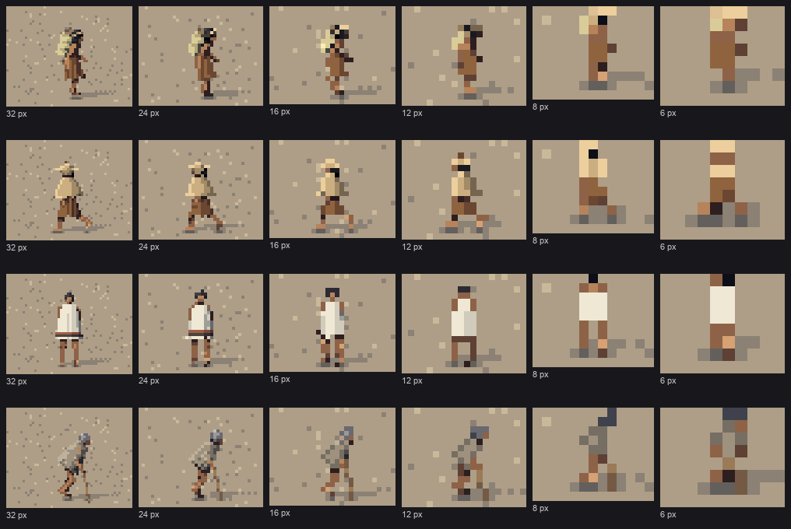
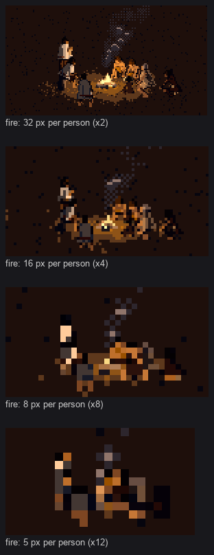
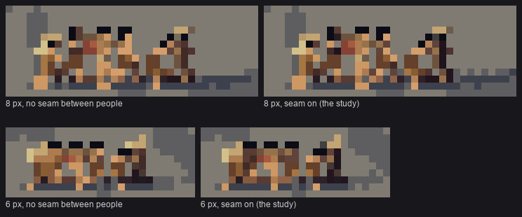
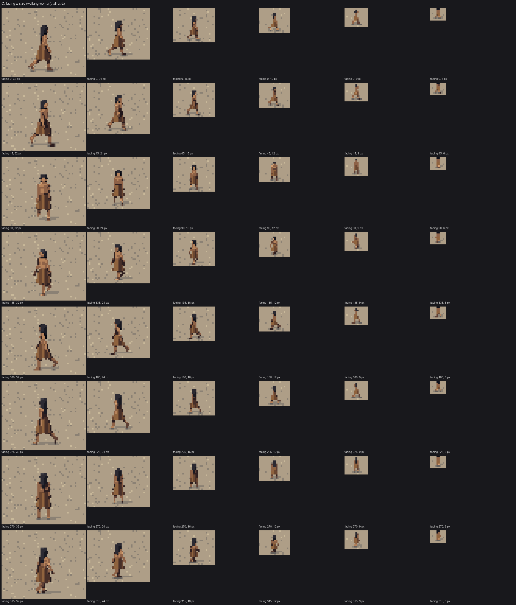
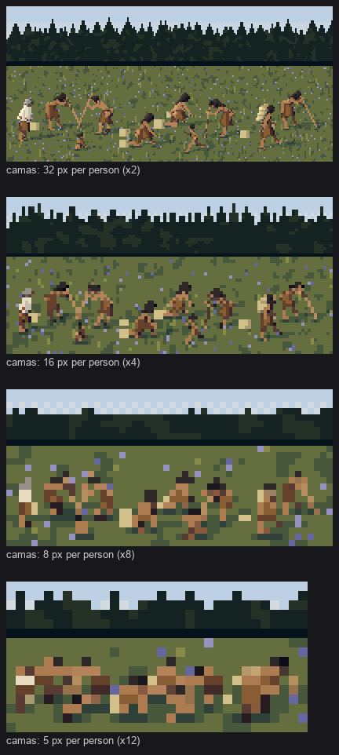

5. The size ladder: what a person is made of at 12, 8 and 6 px
Back to the tutorial. Code: fig.proportions (head and girth), person.build (tiny, MW, the hair sphere), render.shade (the gates, the glyph collapse, the seam between people), in ~/work/pixelart-studies/elements/people/src/.
This is the part of the study the critic judged ready and named as the key: "a figure that still reads as a person at 6 px". The naturalist's distance ladder is the spec:
- at 10 m, silhouette and three masses, and the props read;
- at 100 m, "dots with a colour cue: pale for blanketed figures, warm for bare skin, cone-shapes for rain capes and hats; canoes as dark slivers with paddlers as nicks along the gunwale".
Every rule below is a function of one number, the height of a standing adult in pixels, size_px. The rules are continuous where they can be, so a figure doesn't pop between sizes.

fig. A woman with a tumpline basket, a woman in rain gear, a man in a wool blanket, an elder with a staff and fur robe, at 32, 24, 16, 12, 8 and 6 px.
What goes wrong without rules
Rasterize the body faithfully at 6 px and you get a skin-coloured stick with a dark cap:

nb017. 16, 12, 8, 6 px, first try.
And the ablation below shows the same thing with today's code. Each figure is drawn at 8 and 6 px twice: once with the size rules computed as if it were 24 px tall (true proportions, no floors, no collapse), once with its own.

fig. At 8 and 6 px: "24 px rules" is the body drawn faithfully; "own rules" is the study.
With the rules:
- the head is a solid dark block;
- the blanket is one clean cream rectangle, where faithfully drawn it breaks into stripes and a red band;
- the walker's torso is a two-pixel mass instead of a one-pixel line.
Rule 1: the head grows
Every sprite artist does this. In life the head is about 1/7.5 of height. Here it grows smoothly below 28 px, with an extra push below 10:
boost = 1.0 + 0.4 * np.clip((28 - px) / 20, 0, 1) + 0.25 * np.clip((10 - px) / 4, 0, 1)
P['head'] *= boost
That's ×1.0 at 28 px, ×1.3 at 13 px and ×1.65 at 6 px. Anyone who isn't in the adult age class is passed in at 0.8 × their size, so their heads grow a little sooner. That's meant for children; elders get it too, by an accident of the code I've only now noticed.
Rule 2: limbs and trunk thicken below 12 px
th = 1.0 + 0.45 * np.clip((12 - px) / 6, 0, 1)
for k in ('r_torso', 'r_thigh', 'r_shin', 'r_uarm', 'r_farm'):
P[k] *= th
P['girth'] = th
Rule 3: pixel floors per mass
A 6 px person is two pixels wide, and a faithful torso at that size is half a pixel. So every mass has a minimum radius in pixels, which grows as the figure shrinks below 10 px:
tiny = float(np.clip((10 - size_px) / 4, 0, 1)) # 0 at 10 px and up, 1 at 6 px
MW = lambda base, extra=0.45: base + extra * tiny
add(..., tag='torso', minw=MW(0.5)) # torso bars: 0.5 px -> 0.95 px
add(..., tag='skirt', minw=MW(0.7, 0.35)) # skirt: 0.7 -> 1.05
add(..., tag='blanket', minw=MW(0.9, 0.2)) # blanket: 0.9 -> 1.1
The floors are why the garments need their depth bias (how-to 3): a floored skirt is fatter than the legs inside it, but it must also win over them.
Rule 4: a dark dot on top
Below 10 px the face shrinks by up to 30% and the hair sphere rides up by 0.2 of a head radius, so the top pixel of every figure is hair:
add(hc - hfw * hr * 0.2 + hu * hr * (0.22 + 0.2 * tiny), ..., hr * 1.0, None, 'HAIR', tag='hair', minw=0.6)
add(hc + hfw * hr * 0.42 - hu * hr * 0.18, ..., hr * 0.74 * (1 - 0.3 * tiny), ..., 'SKIN', tag='head', minw=0.45)
Black hair is the one value extreme every person here carries, as the Bruegel reduction predicted (how-to 1). A dark dot on a body colour on two legs reads as "person" at a glance, at every hour.
Rule 5: detail switches off, in order
Each kind of detail has a size below which it's noise, so it's gated:
| detail | on at |
|---|---|
| highlight step | ≥ 22 px |
| twining rows on capes | ≥ 40 px |
| fur texture | ≥ 18 px |
| straw rows on baskets | ≥ 16 px |
| tucks | ≥ 16 px |
| bark fringe strands | ≥ 14 px |
| blanket bands | ≥ 14 px |
| core step on undersides | ≥ 12 px |
| hem shadows | ≥ 12 px |
| occlusion seams inside a figure | ≥ 10 px |
| far-side step | legs only below 10 px (props keep theirs) |
The last row came from a bug I found at 8 px: I'd switched off the step offsets for everything but legs, and the dark wet weir stakes turned tan, because "dark and wet" was a step offset.

nb121. The bug: at 8 px the stakes have lost their offset. One line fixed it: step + np.where(legs | (cv.fig < 0), cv.stepmod, 0).
Rule 6: the glyph collapse at 8 px and below
Even with all the above, an 8 px figure still carried five shade steps across a handful of pixels, and a crowd of them read as salt and pepper. So at 8 px and below each figure is collapsed into a glyph:
- two tones per material, lit (step 3) or shadow (step 1);
- hair a flat dark;
- no texture, no inner seams;
- legs keep their far-side step.
if size_px <= 8:
two = np.where(step >= 2, 3, 1) # from the resolved light (sun or fire), not the sun alone
two = two + np.where(legs, cv.stepmod, 0)
ishair = (mat == M['HAIR']) | (mat == M.get('HAIRG', -1))
two = np.where(ishair, 1, two)
step = np.where((cv.fig >= 0) & ~dark2, two, step)
My first version took lit-or-shadow from the sun term alone. At night, with the sun off, that lit every figure by a sun that wasn't there:

nb124. The fire circle with the glyph collapse's first version: at 8 and 5 px the figures glow as if in daylight.

nb125. Fixed by collapsing from the resolved step (after firelight) instead of the sun term: faces to the fire lit, backs dark.
Rule 7: a seam between people
In a group, people overlap, and at 5–8 px two overlapping figures of the same skin and bark merge into one smear. At every size, the farther of two overlapping people takes a dark edge where the nearer one covers it:
dark2 = np.zeros_like(m)
for dy, dx in ((-1, 0), (1, 0), (0, -1), (0, 1)):
zn = np.roll(np.roll(z, dy, 0), dx, 1)
fn = np.roll(np.roll(fig, dy, 0), dx, 1)
mn = np.roll(np.roll(m, dy, 0), dx, 1)
dark2 |= m & mn & (fn != fig) & (zn > z + 0.5)
step = np.where(dark2, np.minimum(step - 1, 1), step)
It's the same idea as the occlusion seam inside one figure, lifted to between figures, and it survives the glyph collapse on purpose.

fig. A tight file at 8 and 6 px, with the seam off (all people treated as one figure) and on. The effect is a pixel here and there, and it's the difference between six people and one brown mass.
Facing and size together

study. Sheet C: a walking woman in eight facings, 32 → 6 px.
Front and back views are the hardest at small sizes, because the legs overlap less in the silhouette but the stride disappears. Side and 3/4 views read the activity best, which matters for a sim choosing a facing to show.
Where it falls short
- A packed group of bent people at 5 px is a band of colour. The camas diggers at real spacing (a metre or so apart) overlap on screen. I spread them apart at small sizes, which is cheating a little.

nb105. Camas diggers at 32/16/8/5 px before spreading: by 5 px, a brown band.
I think the right answer lives in the sim, not the painter: how many people are drawn at 5 px per person, and how they're spaced. I sent that question to David. - The seated activities all become "someone sitting" at 12 px and below. - Children at 24 px are too thin. The head and torso floors that save the 6 px adult aren't applied strongly enough to a 24 px child, who is 15 px tall.